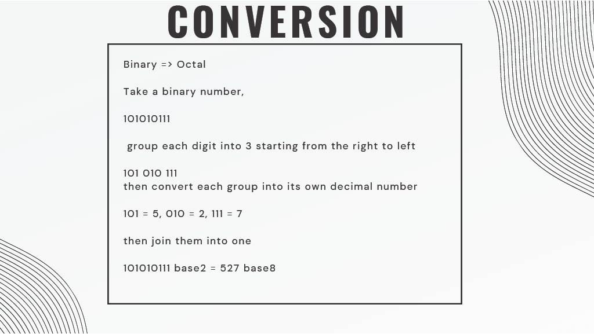
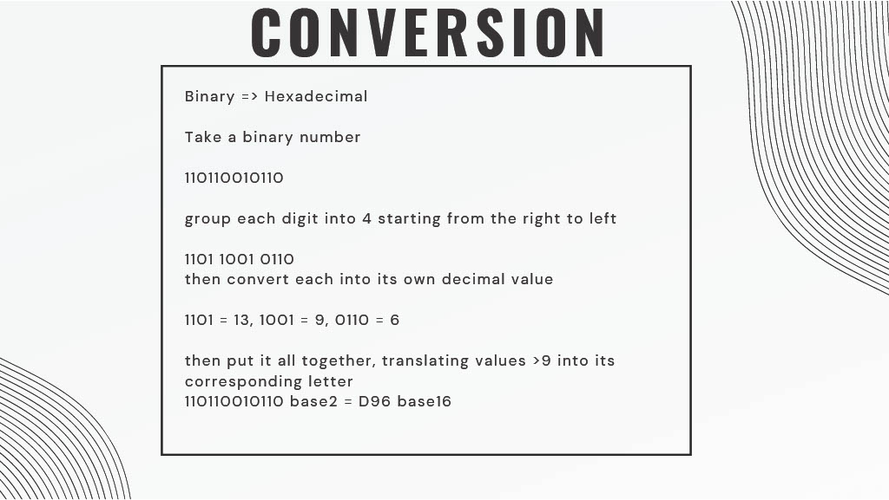
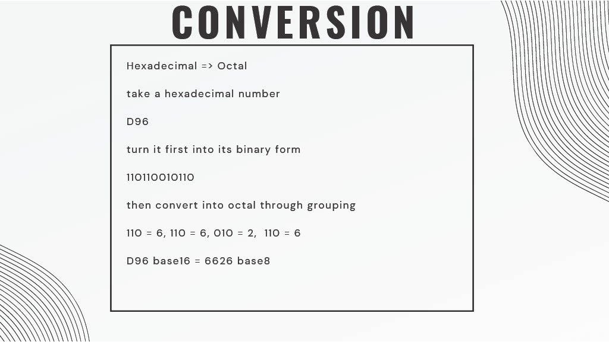
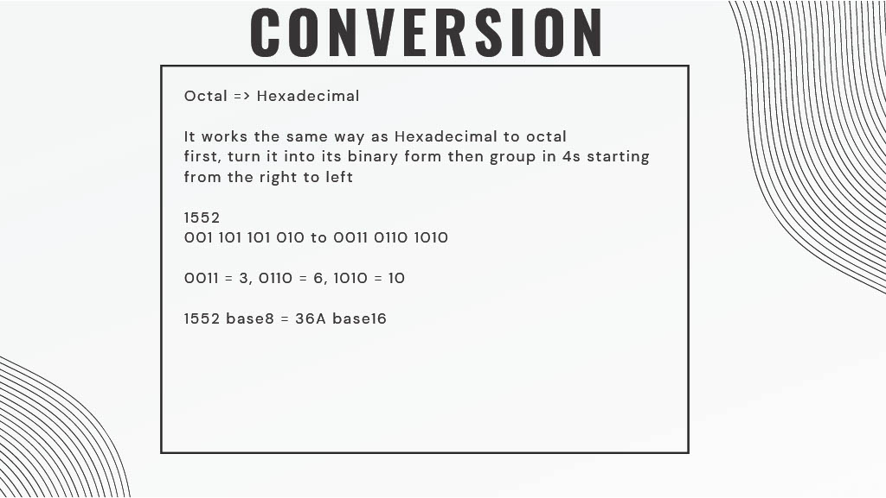

NUMBER SYSTEMS
Presented By: Ryan Nicolas M. Romero
ITC 1 Portfolio #3
OVERVIEW
- Introduction
- What Are Number Systems?
- Ttypes of Number Systems
- Base 10, 2, 8, 16
- Number System Conversions
- Refrences
INTRO
Number systems are systems of counting numbers using a base value. We usually count in the decimal number system which goes like 1 to 2, then 3 until 1000 and more. This is only one of the many examples of number systems that humans created over a long period. In this presentation, I will be talking about number systems commonly used in computing, which are Decimal, Binary, Octal, and Hexadecimal.
NUMBER SYSTEMS
Number systems are widely used for computing like in machine code using binary, or other digital numbering systems using base 8 or 16. These systems help our programs run, and without them, we would not have the luxury we have today regarding our programs, especially involving large numbers and calculations.
Number systems date back to the Babylonians with their Babylonian numbering system. This system was a base 60 system. There are several systems all over the world like in China, Egypt, Ancient Greece, and Ancient Rome, and of course, decimal, binary, octal, and hexadecimal used in computers.
TYPES OF NUMBER SYSTEMS
DECIMAL
The decimal number system, also known as the Base10 numbering system, is the system most people in the world use. Its values range from 0-9. Using this decimal system, when we receive a number, let's say 121, we multiply each single-digit value in 121 by 10^n, where n is the place of that number from right to left starting at 0.
Example:
121 = 1*10^2 + 2*10^1 + 1*10^0 = 100 + 20 + 1
BINARY
The binary number system, also known as Base2, is widely known to represent numbers in computers using 1s and 0s. Using this number system, we can take a string of 1s and 0s, for example, 1001, and multiply each single-digit value with 2^n, where n is its position from right to left starting from 0, and turn it into a decimal number.
Example:
1001 = 1*2^3 + 0*2^2 + 0*2^1 + 1*2^0 = 8 + 0 + 0 + 1 = 9
OCTAL
The octal number system, also known as the Base8 numbering system, is widely used in digital numbering systems and computers. Its values range from 0-7. Using the octal number system, we can take a number such as 121, multiply each single-digit value with 8^n, where n is its position from right to left starting at 0, and turn it into a decimal number.
Example:
121 = 1*8^2 + 2*8^1 + 1*8^0 = 64 + 16 + 1 = 81
HEXADECIMAL
The hexadecimal number system is a system used to represent large values in a small amount of numbers and letters. Its values range from 0-15, but from 10-15 it’s A, B, C, D, E, F, in that order. Using the hexadecimal system, we can take a number, let’s say, AF1, multiply each single-digit letter or value with 16^n, where n is its position from right to left starting with 0, and convert it into decimal.
Example:
AF1 = A*16^2 + F*16^1 + 1*16^0 = 10*256 + 15*16 + 1 = 2801
CONVERSION
Decimal to Binary
Subtraction Method

Division Method

Binary to Octal
Binary to Hexadecimal
Hexadecimal to Octal
Octal to Hexadecimal
REFERENCES
- Institute of Professional Studies, Gwalior
- Sathyabama Institute of Science and Technology
- University of Minnesota Duluth
- ResearchGate
- Chalmers University of Technology